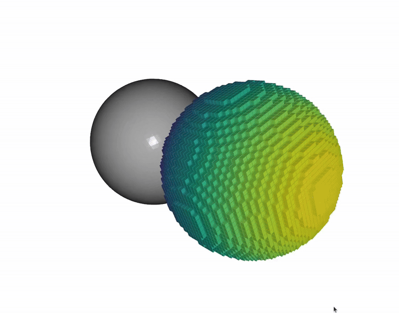

Voxels Access Example#
This example demonstrates how to directly access voxels in nvblox_torch.
To run this example:
python3 -m nvblox_torch.examples.voxels.voxels
The example visualizes two spheres. One is a mesh extracted from the TSDF of a sphere, and the other visualizes all voxels which lie inside a second sphere. Note that when you close the Open3D window, another one will open, which displays the same scene. This is because the example demonstrates two different ways of accessing voxels.
See Details for more information.

The code for this example can be found at voxels.py
Details#
This example demonstrates two different ways of accessing voxels:
Using dense (copy-based) access.
Using sparse (direct) access.
For both examples we first generate a toy scene containing a single sphere. We generate a mesh from the TSDF of the scene in order to add it to the visualization.
mapper = get_single_sphere_scene_mapper(radius_m=SPHERE_RADIUS_M)
mapper.update_color_mesh()
mesh = mapper.get_color_mesh()
mesh_o3d = mesh.to_open3d()
mesh_o3d.compute_vertex_normals()
We get the TsdfLayer which contains the TSDF voxels.
tsdf_layer = mapper.tsdf_layer_view()
In the remainder of this example, the goal will be to visualize voxels which lie inside the sphere.
Let’s now look at two different methods of achieving this through two different methods of accessing the voxels in the map.
Dense (Copy-Based) Voxel Access#
The most straightforward way of accessing the voxels is to access them as a dense torch tensor.
This method of access is shown in the function visualize_voxels_dense_access().
Note
Internally, voxels in nvblox_torch are stored sparsely.
In particular, voxels are only allocated in regions of the map that the camera has observed.
This saves memory and allows the map to grow and shrink arbitrarily as the camera moves.
However, this sparse design means that we cannot directly access the voxels as a dense
torch tensor, they have to be copied into a dense tensor first.
See Sparse (direct) Voxel Access for an alternative method which does not require
copying the voxels.
To access the voxels as a dense torch tensor, we first need to copy the TsdfLayer
to a dense tensor.
tsdf_dense, voxel_center_grid = convert_layer_to_dense_tensor(layer=tsdf_layer)
The function convert_layer_to_dense_tensor() returns:
tsdf_dense: A densetorchtensor with the shape(H, W, D, 2)The first channel contains the TSDF values, and the second channel contains the weights.voxel_center_grid: A(H, W, D, 3)tensor containing the 3D coordinates of the centers of the voxels.
The dense tensor is sized such that it contains all observed voxels, i.e. the Axis-Aligned Bounding Box (AABB) of the layer.
To generate the visualization we find all the voxels that lie inside the sphere, by detecting those with a TSDF distance of less than 0.0.
dense_mask = tsdf_dense < 0.0
We then extract the voxel centers of the voxels meeting this condition.
voxel_center_grid_meeting_condition = voxel_center_grid[torch.squeeze(dense_mask), :]
And visualize them. Note that we color the voxels by the y-coordinate, and translate the voxels to the right to avoid overlapping with the mesh.
# Color by y-coordinate
colors = convert_to_colors(voxel_center_grid_meeting_condition[:, 1])
# Visualize
voxels_mesh_o3d = get_voxel_mesh(
centers=voxel_center_grid_meeting_condition,
voxel_size_m=tsdf_layer.voxel_size(),
colors=colors,
)
voxels_mesh_o3d.translate(torch.tensor([2 * SPHERE_RADIUS_M, 0.0, 0.0]))
if visualize:
o3d.visualization.draw_geometries([mesh_o3d, voxels_mesh_o3d])
Dense/copy-based access is straightforward, but it requires copying the voxels into a dense tensor first. If speed and memory are not a concern this approach is fine.
Next we look at the alternative method of accessing the voxels, which is more efficient but requires a bit more code.
Sparse (direct) Voxel Access#
In this method we directly access the voxels in the TsdfLayer without copying them.
Note
Some knowledge of the internal structure of nvblox Layers is helpful for this example.
Voxels are allocated in groups, called VoxelBlocks of size 8x8x8.
The world is divided up into a grid of these VoxelBlocks.
Therefore each VoxelBlock corresponds to a specific region of the world.
The memory for each VoxelBlock is only allocated when it is first observed.
Inside each VoxelBlock, if allocated, contains a dense grid of 8x8x8 voxels.
See our nvblox paper [1] for more details.
To directly access the voxels in the TsdfLayer we get a list of allocated blocks:
blocks, indices = tsdf_layer.get_all_blocks()
Where
blocks: Is aListoftorchtensors, each containing the voxels for a particularVoxelBlock. SoNtensors of size8x8x8x2in the case of TSDF voxels.indices: Is aListoftorchtensors of the 3D indices of theVoxelBlocks. SoNtensors of size3.
Note
Each of the blocks tensors is a torch wrapper around the corresponding
VoxelBlock in nvblox. So no memory is copied when generating these
tensors.
Note
Right now nvblox_torch does not prevent you from creating dangling references
to deleted VoxelBlocks. When calling functions which potentially delete
VoxelBlocks, you should reaquire the torch block tensors.
In this version of nvblox_torch only mapper.clear() and
mapper.decay*() can delete VoxelBlocks.
Making this interface totally safe is future work.
We convert the list VoxelBlock indices to a list of voxel centers.
voxel_centers_list = get_voxel_center_grids(indices, tsdf_layer.voxel_size(), device='cuda')
We then loop over all the voxel blocks and extract the voxel centers that lie inside the sphere.
for block, voxel_centers in zip(blocks, voxel_centers_list):
# Get the TSDF values
tsdf_values = block[..., 0]
# Get the mask of the voxels that are inside the sphere
mask = tsdf_values < 0.0
# Append the voxel centers that are inside the sphere
voxels_centers_meeting_condition.append(voxel_centers[mask, :])
Finally, again, we visualize the resulting voxels.
# Color by x-coordinate
colors = convert_to_colors(voxel_center_grid_meeting_condition[:, 0])
# Convert to an Open3D mesh
voxels_mesh_o3d = get_voxel_mesh(
centers=voxel_center_grid_meeting_condition,
voxel_size_m=tsdf_layer.voxel_size(),
colors=colors,
)
# We translate the voxels to the right to avoid overlapping with the mesh
voxels_mesh_o3d.translate(torch.tensor([2 * SPHERE_RADIUS_M, 0.0, 0.0]))
# Visualize the voxels (and the mesh)
if visualize:
o3d.visualization.draw_geometries([mesh_o3d, voxels_mesh_o3d])
So sparse access is more complex, but it does not require copying the voxels.